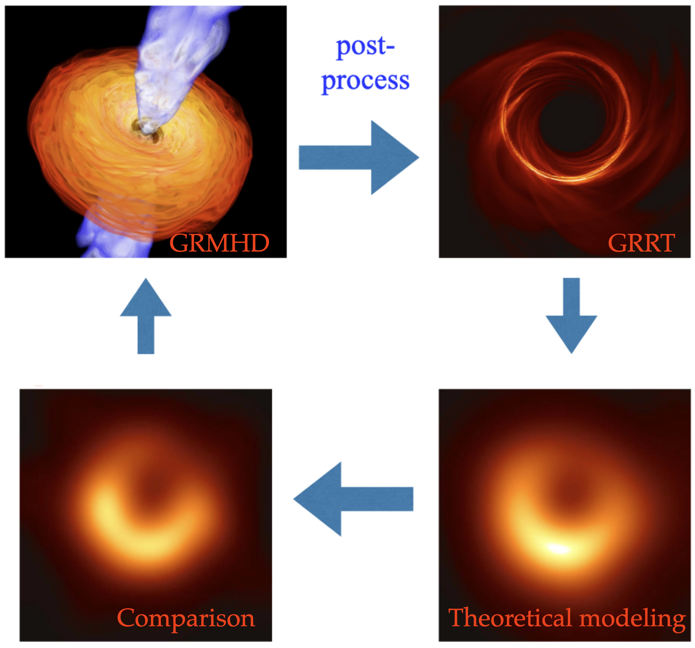
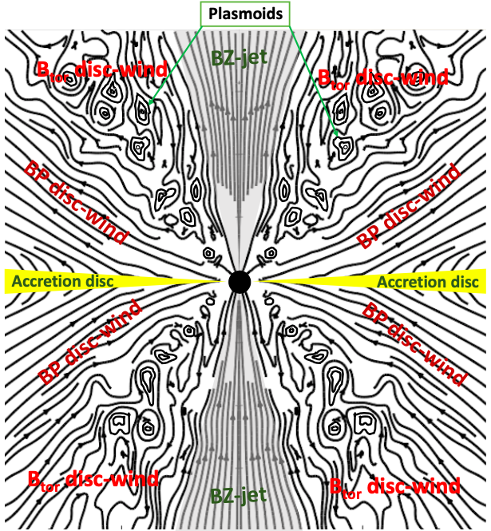
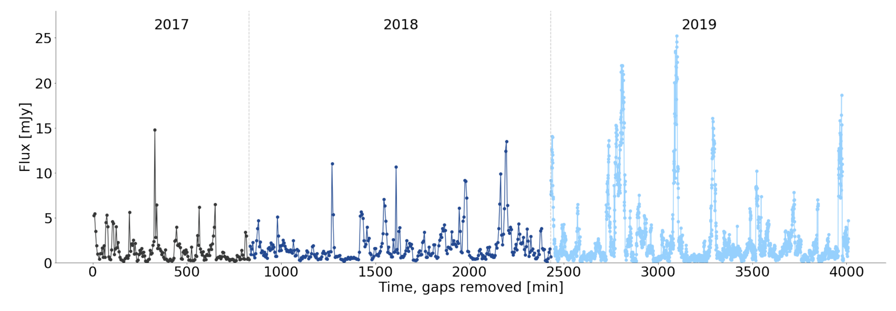

Indu Kalpa Dihingia
Associate Professor (Research)
Institute of Fundamental Physics and Quantum Technology & School of Physical Science and Technology, Ningbo University, China
Research
Currently, I am an Associate Professor (Research) at Ningbo University. My research focuses on understanding the physics of accretion flows, relativistic jets, and variability phenomena around black holes and other compact objects. By combining analytical theory, numerical simulations, and observational diagnostics, I investigate how matter behaves in the presence of strong gravitational fields and how these processes manifest themselves in astronomical observations.
My work spans both supermassive and stellar-mass black holes, with applications ranging from Event Horizon Telescope (EHT) observations and horizon-scale imaging to X-ray variability in compact-object systems. A major goal of my research is to bridge the gap between theoretical models and observations, enabling a deeper understanding of the physical mechanisms governing some of the most energetic phenomena in the Universe.
The research areas highlighted below represent several of my current interests and active projects. However, my scientific interests are not confined to these topics alone. As new observational facilities, computational techniques, and theoretical challenges emerge, I aim to continually expand my research horizons and explore new directions in high-energy astrophysics, black hole physics, and related areas of gravitational science.
1. GRMHD Simulations of Black Holes
General Relativistic Magnetohydrodynamics (GRMHD) has emerged as one of the most powerful tools for investigating the behavior of magnetized plasma in the strong-gravity environment surrounding black holes. By simultaneously accounting for the effects of magnetic fields, fluid dynamics, and Einstein's theory of General Relativity, GRMHD simulations provide a self-consistent framework for studying accretion flows, relativistic jet formation, and time-dependent variability near compact objects. These simulations have become indispensable for interpreting modern observations of black hole systems across a wide range of scales, from stellar-mass black holes in X-ray binaries to supermassive black holes residing in the centers of galaxies.
The applications of GRMHD simulations are broad and continually expanding. They play a central role in understanding horizon-scale images obtained by the Event Horizon Telescope (EHT), the launching and collimation of relativistic jets, high-energy emission from accreting black holes, quasi-periodic variability, and the coupling between accretion flows and large-scale magnetic fields. By connecting theoretical models with observational signatures, GRMHD simulations provide a crucial bridge between fundamental physics and modern multi-wavelength and time-domain astronomy.
For comprehensive reviews of GRMHD simulations and their astrophysical applications, see Gammie, McKinney & Tóth (2003), Mizuno (2022), and Dihingia & Fendt (2025).
Below are some research topics and projects that I have recently worked on using GRMHD simulations.
(a) Black Hole Imaging and EHT Science

My research focuses on connecting horizon-scale observations of supermassive black holes with theoretical models of accretion and jet formation. Using GRMHD simulations coupled with general relativistic radiative transfer (GRRT) calculations, we generate synthetic black hole images that can be directly compared with observations from the Event Horizon Telescope (EHT).
A key goal is to determine how black hole spin, viewing inclination, and accretion-flow parameters influence observable image features such as the shadow, photon ring, and asymmetric crescent emission. By performing systematic parameter surveys and image-domain comparisons, we identify regions of model space that are consistent with EHT observations and quantify the constraints that current and future VLBI arrays can place on black hole physics.
We also investigate the imaging capabilities of next-generation EHT (ngEHT), Black Hole Explorer (BHEX), evaluating how improved angular resolution and array sensitivity can enhance tests of accretion models, black hole spin measurements, and strong-gravity predictions near the event horizon. Here are some selected publications Event Horizon Telescope Collaboration 2024, Event Horizon Telescope Collaboration 2025, Uniyal et al. 2026.
(b) Jet Formation and Magnetic Flux Evolution

A key focus of my research is understanding how relativistic jets and disc-winds are launched from black hole accretion systems. Using state-of-the-art GRMHD simulations of thin accretion discs around Kerr black holes, I investigate the transition between different accretion regimes—from Standard And Normal Evolution (SANE) to Magnetically Arrested Disc (MAD)—and how this transition influences jet formation. Our simulations reveal that both the Blandford & Znajek (BZ) mechanism, which extracts rotational energy from the black hole itself, and the Blandford & Payne (BP) mechanism, which drives magneto-centrifugal winds from the accretion disc surface, operate simultaneously and their relative efficiency depends critically on the initial magnetic field strength and configuration.
We find that models with stronger and more inclined poloidal magnetic fields evolve toward a MAD state, where the accumulated magnetic flux near the black hole suppresses MRI-driven turbulence and instead promotes efficient BZ jet launching, achieving Lorentz factors up to γ ∼ 10. In these strongly magnetized regimes, the disc-wind is primarily driven by the BP mechanism via magneto-centrifugal acceleration. Conversely, weaker magnetic field configurations remain in SANE-like states where MRI-driven turbulence dominates, leading to toroidal magnetic pressure-dominated disc-winds. Our simulations also capture the formation of plasmoids through magnetic reconnection in current sheets near the black hole, which are advected outward and contribute to flaring activities and quasi-periodic oscillations in the jet mass flow rate. These results provide a unified framework for understanding the connection between accretion state transitions, jet launching efficiency, and observed variability in black hole X-ray binaries and AGN. For more details, see our comprehensive study Dihingia, Vaidya & Fendt (2021, MNRAS, 505, 3596).
(c) Variability and Time-Domain Signatures

Time-domain variability is a powerful probe of accretion physics near black holes. Using long-duration GRMHD simulations of thin accretion disks interacting with injected low-angular-momentum matter, I have systematically studied how accretion flow properties evolve over time and how they manifest in variability signatures. Our simulations naturally reproduce the decaying phase of outbursts in black hole X-ray binaries, showing a continuous transition from the soft state → soft-intermediate state → hard-intermediate state → hard state → quiescent state, exactly as observed.
A key finding is the emergence of quasi-periodic oscillations (QPOs) in the accretion rate at various radii. We observe both low-frequency QPOs (~10 Hz for a 10 M☉ black hole) and high-frequency QPOs (~200 Hz), depending on the phase of evolution. The frequency of these oscillations correlates with the ratio of injected angular momentum to Keplerian angular momentum at the ISCO. When the accretion flow transitions to a low-angular-momentum torus configuration, the entire flow oscillates at the Keplerian frequency of the density maximum, producing coherent high-frequency QPOs. These results provide a theoretical framework for understanding the diverse QPO phenomena observed in BH-XRBs such as GRS 1915+105, XTE J1550-564, and GRO J1655-40.
This work also has implications for the "variability crisis" of Sagittarius A*—the supermassive black hole at the center of our Galaxy. Despite its low quiescent luminosity, Sgr A* exhibits significant infrared and X-ray flaring activity with a puzzling lack of periodicity. Our simulations suggest that variability in low-angular-momentum accretion flows may be inherently stochastic due to the interplay between injected material and the inner accretion flow. The observed QPOs in stellar-mass BHs scale to ~10⁻⁴–10⁻⁵ Hz for Sgr A*, below current observational sensitivity, potentially explaining why no coherent periodicity has been detected despite intense monitoring campaigns. Future instruments like the next-generation EHT (ngEHT) and high-cadence infrared telescopes may help resolve this puzzle. For details, see our comprehensive study Dihingia, Mizuno & Sharma (2023, ApJ, 958, 105).
(b) Imaging and Spectral Properties

Synthetic images and spectra of exotic compact objects, providing testable predictions for next-generation telescopes and interferometers.
3. Low-Angular-Momentum Accretion
Hydrodynamic and magnetohydrodynamic studies of low-angular-momentum flows around black holes and exotic compact objects, relevant for wind-fed systems and certain classes of transients.
(a) Shock Formation and Oscillation
Formation, evolution, and oscillation of shocks in accretion flows with low angular momentum, and their connection to observed variability patterns.
(b) Quasi-Periodic Oscillations
Theoretical interpretation of quasi-periodic oscillations (QPOs) in X-ray binaries and active galactic nuclei, using shocks and accretion flow dynamics as underlying mechanisms.
(c) Astrophysical Applications
Applications to wind-fed systems, transients, and compact-object variability in X-ray binaries and active galactic nuclei.
4. Semi-Analytical Accretion Models
Development of analytical and semi-analytical frameworks for understanding accretion flows around black holes and exotic objects, providing complementary insights to numerical simulations.
(a) Transonic Flow Solutions
Critical point analysis and transonic accretion solutions for black holes and exotic compact objects, including the effects of various equations of state.
(b) Stability and Flow Topology
Topology of accretion solutions and shock stability analysis, providing insights into the parameter space of viable accretion flows.
(c) Exotic Compact Objects
Semi-analytical studies of accretion onto exotic compact objects, including boson stars, wormholes, and other alternatives to black holes.
Collaborations
I actively collaborate with researchers at Event Horizon Telescope collaboration, Shanghai Jiao Tong University, IIT Guwahati, and other international institutions. Interested in collaboration? Feel free to reach out!